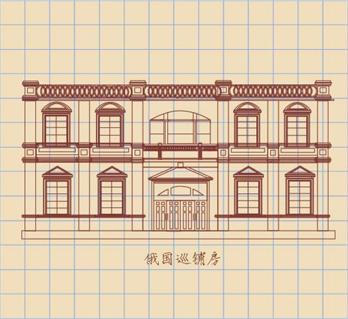

所在街区：江岸区洞庭街77号 建筑风格：古典主义 建造年代：1924年 现存情况：商铺

信义大楼位于江岸区洞庭街与黎黄陂街交叉处，紧邻沿江大道。信义大楼原名为汉口信义公所，是武汉市优秀历史建筑。大楼属晚期古典主义建筑，1923年始建，1924年建成，由石格司建筑事务所（德）设计，汉协盛营造厂施工。原为4层旅馆式建筑，采用三段式立面，后加2层。信义公所主要为华中地区信义会传教士路径武汉市提供住宿，并为其联络和代办各项事务而设立。
汉口信义公所大楼原为4层旅馆式建筑，后加2层，为典型的公寓式建筑，客房有120余间，建筑面积有7000平米，大楼平面呈U字形，一层主要是营业间、公事房、餐厅以及客厅，二层到五层是客房（主要是套房），六层则是单人公寓，整个大楼的功能分区非常清晰，布局十分合理。立面采用横向三段式构图，每段皆有明显的水平向腰线，所以整栋建筑的主线条是水平线的。它是一所非常典型的文艺复兴式建筑，文艺复兴建筑风格有两个主要的特点：一个是反对封建，倡导理性的人文主义思想指导下提倡复兴古希腊古罗马的建筑风格；第二个文艺复兴强调的并不是建筑形式，而是强调建筑形式的思想性和观念性。